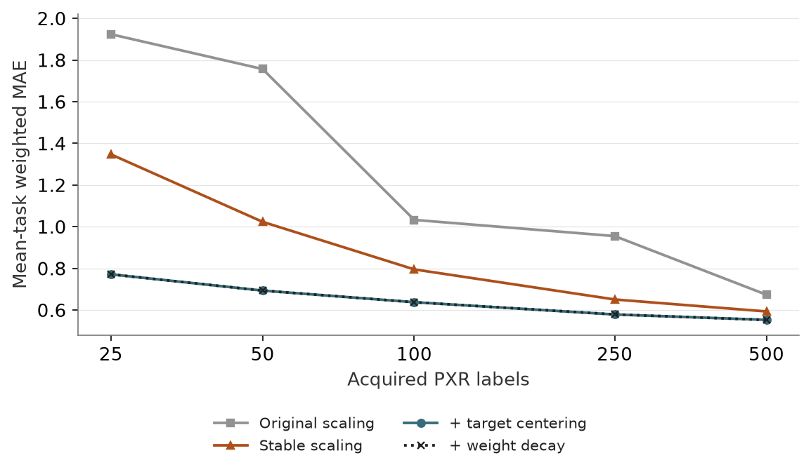

Stable scaling and readouts
Status: completed · Synthesis updated 2026-09-08. Original dates and immutable protocol history remain in the source evidence.
Question
Were poor vector probes an avoidable preprocessing problem?

PNG · SVG · Plotted data · Figure provenance
{kind=link}
{kind=link}
Design and fitted/frozen flow
Frozen native vectors → training-only stable preprocessing and fitted readout; ligand features → training-only reduction and fitted LightGBM. Strict branch purges FIT/CAL pools at Morgan similarity ≥0.35 to test. All labels remain inside the acquired budget.
Results
Stable scaling and target centering substantially improve MLP performance; added weight decay contributes little. Stable ridge is competitive, but its small N500 advantage over the pretrained head is unresolved.
Implication and limits
All 8,100 new follow-up tasks completed, plus 1,200 original comparator tasks replayed. Repeated draws are dependent; chemical novelty and prospective coverage remain unresolved.
All evidence is retrospective. Historical budgets, splits and raw versus uncertainty-weighted scores must remain distinct.
Source evidence
Original reports and exact tables (historical report links may refer to unbundled files).